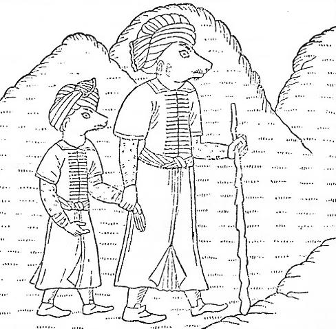

(Han-nâmeye göre)
"Kil-Han, yaşlanınca tahtını oğlu Ozgan-Han’a. bırakmıştı.306 Tahtını Ozgan-Han'a bırakırken öğütler vermiş, kardeşleri olan Özbek'lerin kendisine karşı besledikleri düşmanlıkları hatırlatmıştı. Kendisinin ölümünden sonra karışıklık çıkacağını bildiği için, önce onlara nasihat edilmesini ve bu nasihatle de yola gelmedikleri takdirde ezilmelerini söylemişti...
"Ozgan-Han'ın yedi307 akım vardı. Birinci akında Tohmaş, Çılban, Benan308 askerini toplayarak, Rak-Han309 üzerine yürüyor. Ozgan-Han'ın Izdahak310 adlı bir Atalık'ı311 vardır. Kendi ordusunun komutasını bu Atalık'ın eline veriyor. Rak-Han ile İlak-Han312 aynı yerde otururlar imiş. İleriye doğru yürüyen Ozgan-Han gelerek, Kuruk (Kurug)-Tag adlı bir dağın eteğinde konaklıyor. Buraya Kuruk-Tag diyorlarmış. Çünkü burada ne çiçek, ne ot ve ne de bitki bulunurmuş. Çakmak taşından başka bir şey yokmuş. Ozgan-Han'ın savaş için geldiği öğrenilince, her iki taraf da askerlerini saf halinde dizerler ve harbe hazır olurlar. Orduda başlıca üç alp er varmış. Bunlar, bir peygamber olan Ozgan-Han, boylu boslu Ulug-Arslan ve Iz-dagak Atalık idiler.313 Savaş meydanındaki halklar ise, Rak, Ilak, Tohmaşlı. Çılbanlı, Benanlı, Şerûlu, Kerûlu, Sangalak314, Kalvaz(?), Kestire ve Süryani'lerden ibaretti.
"Ulug-Arslanın karşısına Raklı'lardan Arslan-Bahadur çıkar. Karşılıklı geçen zorlu bir savaş sonunda, Ulug-Arslan, Arslan Bahadur'u öldürür. Bunun üzerine Râk ve Ilak'lılar savaş meydanına girerler ve iki ordu arasında çetin bir savaş başlar. Bundan sonra savaş meydanında, Râk-ı Çanbelid ve Anduvid-i Tohmaşi adlı iki alp peyda oluyorlar ve birbiriyle çetin bir savaşa başlıyorlar. Bu ikili savaş tam bir yıl sürüyor.315
"Bir yıl sonra, Râk ve Hak'lılar Kurug-Tag'ın tepesine çekilmek zorunda kalıyorlar. Ozgan-Han onlara elçi gönderip tâbi olmalarını istiyor ve Râk'lı, Ilaklı'lar Ozgan-Han'ın bu isteğine katılıyorlar."
"Ozgan-Han birçok yollar ve menziller geçiyor ve en sonunda bir dağın eteğine ulaşıyor. Bu dağın başını bulutlar, eteklerini de başsız ve padişahsız dolaşan Özbek'ler kaplamış imiş.317 Ama onlardan hiç kimsenin Ozgan-Han'ın geldiğinden haberi yokmuş. Bunun üzerine Tohmaş'lılar giderek Özbek'i yakalayıp, Ozgan-Han'a getiriyorlar. Özbek tuttuğu yolun yanlış olduğunu itiraf ediyor ve affedilmesini Ozgan-Han'dan diliyor. Ozgan-Han da onun bu dileğini yerine getirerek, onu bağışlıyor. Böylece hep beraber Hurer-Han (? = Hazer-Han?) üzerine yürüyorlar. Her iki Han da önce barış yolu ile anlaşmak için karşılaşıp konuşuyorlar. Fakat barış yolu ile anlaşmanın imkânı olmadığını görünce de savaşa başlıyorlar.
"Önce (Ozgan-Han'ın alpı) Ulug-Arslan ile Hurer'lerden Sandarak318 vuruşuyorlar. Ulug-Arslan, Sandarak'ı öldürdükten sonra Hurer-Han'ı da tutup bağlıyor. Ozgan-Han'da kızgınlığından bir kılıç vurarak Hurer-Han'ın başını vücudundan ayırıyor. Bu suretle Hurer ülkesi ve kabilelerinin hepsi Ozgan-Han'ın hâkimiyeti altına girmiş oluyor."
"Ozgan-Han ordusu ile beraber yollara çıkıyor, birçok menzil geçtikten sonra yine bir dağın eteğine ulaşıyor. Bu dağın adı Kûh-i Çeng imiş. Baştanbaşa ormanlık olan bu dağlarda, arslanlar, kaplanlar, parslar ve kurtlar gibi vahşi hayvanlar yaşarmış. Ozgan-Han bu dağda konaklıyor. Sümbüller ve güller içinde on gün eğleniyor. Bir adam gelip Kimeri-Han'a, Ozgan-Han'ın ordusu ile birlikte geldiğini haber veriyor. Kimerî-Han319 çok akıllı bir kişi imiş. Bu haberi alınca gülüyor ve bu dünya savaşa değmez diye Ozgan-Han'ın buyruğuna giriyor.320"
"Ozgan-Han, Râk-Han, Ilak-Han ve Kimeri-Han gibi üç kardeşle birleşerek Rûyin-Han321 üzerine yürüdü. Bu dört kardeş, bir hafta yürüdükten sonra, sekizinci gün Haras Dağı'na ulaştılar. Rûyin-Han'ın askeri, bu dört kardeşin askerinden daha çok idi. Her iki ordu bu dağın eteğinde karşı karşıya gelip durdular. Kimerî-Han, Rûyin'e nasihat vermek için ilerledi ve babalarının vasiyetini ona hatırlattı.322 Kil-Han'ın büyüklüğünü anlattı. Tanrı'nın buyruğuna uyarak, babalarının Ozgan'ı nasıl bey yaptığını ve baba sözü dinlemeyenlerin, Özbek gibi nasıl düşüp gideceklerini hatırlattı ve savaştan vazgeçmesini nasihat etti. Rûyin-Han bu sözler üzerine yumuşadı ve Ozgan- Han'ın buyruğundan çıkmayacağına dair and verdi323..."
"Ozgan-Han, altıncı akınını Saklab324 üzerine yaptı. Şimdiye kadar yaptığı savaşlarda bağlanan illerle beraber yola çıktı. Beyler toplanıp konuştular. Ona da öğüt verilmesini ve eğer öğüt almazsa onunla da savaşılmasını karar altına aldılar. Bir hafta gittikten sonra, sekizinci gün bir yeşilliğe ulaştılar... Göz alabildiğine uzanan bir sahra. Öyle bir sahra ki, bunun eşini hiç kimse görmemiştir. Saklab halkı bu sahra içinde, öbek öbek çadırlar, otağlar kurmuş oturuyorlardı. Koyun, at ve sığır sürülerini otlatırlarken, Ozgan-Han da gelip ordusu ile onların yakınında konakladı. Ozgan-Han'ın ordusu öyle kalabalıktı ki, bu kadar insan topluluğunu yeryüzünde hiç kimse görmemişti. Böyle büyük bir ordu gelip sahraya kondu diye, Saklab-Han'a haber verdiler. Saklab-Han bunu duyunca bir bozkır parsı (yolbars) gibi parladı. Bir dost olsa bile, kimin haddine ki gelip onun sınırına konaydı. Bunu duyan Saklab-Han, il ve boylara haber çıkardı. Hemen gelmelerini emretti...
"Ozgan-Han hemen bir elçi gönderdi ve nasihatlerde bulundu. Gel de bize baş eğ, babamızın sözüne uy325, sen de bize Özbek'lerin başında yoldaşlık et326; yoksa üzerine yürür, seninle savaşırız, dedi. Saklab-Han, elçi Kimeri'nin nasihatlarını tuttu ve hazinesinde altın, gümüş... Ne varsa gönderdi ve Ozgan-Han'a hediye olarak sundu... (Daha birçok hediyeler) göndererek, suçunun bağışlanmasını diledi. Bundan sonra kendisi de geldi. Ozgan-Han'la sarmaş dolaş oldular ve olan biten her şeyi birbirlerine anlattılar.
"Ertesi gün, sabah olunca, Saklab-Han'ın iki oğlu da geldi. Bunların adları Barak327 ve Kıfçak328" idi. Onlar da kendi orduları ile beraber gelip bir yana kondular. Bu iki oğlan avdan dönmüşlerdi. Döndüklerinde kendi yurtlarında bir yabancı ordu görmüşler ve hemen Ozgan-Han'ın ordusu üzerine saldırmışlardı. O gece her iki taraftan da yüz bin kişi ölmüştü. Geriye kalan atlar, etrafta gezinip duruyorlardı. Bunun üzerine Saklab balkı, hemen (Burak'la Kıfçak'ın) önüne gittiler ve onlara şöyle dediler: - "Bu gece bizlerden ve onlardan tam yüz bin kişi öldü. Biz şimdi ne Ozgan-Han'ın ve ne de Tohmaşlı'ların yanına gideriz. Onlarla bizim aramızda artık bir kan davası vardır. Siz bizim Han oğullarımız; biz de sizin buyruğunuzdaki adamlarınızız. Aramızda böyle bir kan davası olduktan sonra, bir dostluğun kurulması da düşünülemez. Eskilerin dedikleri yolda gideceğiz!"
"Meydana gelip ölüleri saydılar ve bir de baktılar ki otuz bin kişi ölmüş. Bu (yanlışlıktan) utanan Barak'la Kıfçak, babalarının yanına gitmeğe cesaret edemediler. Böyle bir savaş, görülmüş veya duyulmuş değildi. Bu sebepten dolayı o bölgeye "Deşt-i Kıfçak" adı verildi. Nereye bir ad verilmişse, bir sebebi olduğu için o ad oraya verilmiştir:
Dünyada sebepsiz verilmiş hiç bir ad yoktur.329
"Saklab-Han'da, oğullarının yaptığı bu yanlışlıktan dolayı çok utanmış ve adeta Ozgan-Han'ın yüzüne bakamamıştı. Saklab-Han'ın ölümünden sonra, oğulları Barak'la Kıfçak Ozgan-Han'a düşman olmuş ve ona karşı ayaklanmışlardı. Bunun üzerine Ozgan-Han beylerini toplayarak onlara danıştı ve Kimerî-Han'la birlikte onlara savaş açılması karar altına alındı.
"Fakat bu sırada başka şeyler oldu. Özbek'lerin Karnülbakar dağından çıkıp, (Ozgan-Han'ın başkenti) Tohmaş şehrine sardıkları haberi geldi. Bunların ne için gelip de illerine sardıklarını kimse bilmiyordu. Ozgan-Han, yine beylerine danıştı ve hem Saklab-Han'ın oğulları Barak ve Kıfçak ve hem de Karnülbakar dağından inenlerle çarpışamayacağını anladı ve Saklab'a bir elçi göndererek barış kurmak istedi. Barak'la Kıfçak, Ozgan-Han'ın yanına geldiler"
(Han-name’nin bundan sonra verdiği bilgileri, ayrı bir bölümümüzde inceledik. Çünkü Ye'cuc-Me'cuc halkının Karnülbakar dağından çıkışı ve etrafa felâket saçışı Türk mitolojisine, İslami tesirler ve İran mitolojisi yolu ile gelmiştir. Ye'cuc-Me'cuc 'lerin Karnülbakar dağından çıkar çıkmaz, ilk önce It-Barak ve Kıpçak ülkelerine saldırmış olmaları da üzerinde durulacak önemli bir olaydır. Çünkü Ozgan-Han'ın yanına gelen Saklab-Han'ın oğulları, Barak-Han'la Kıpçak-Han, Ye'cuc ve Me'cuc'ların kendi üzerlerine nasıl saldırdıklarını korku ve dehşetle anlatırlar.
Han-Name'ye göre Ozgan-Han, Karnülbakar dağından çıkıp gelen bu korkunç mahlûkların saldırıları karşısında çaresiz kalıp kaçacak ve sonra da eceliyle ölecektir. Sonra da Karneyn gelecek ve bütün Turan ülkesini ele geçirdikten sonra da "Ye'cuc- Me'cuc seddi"ni yapacak ve onları Karnülbakar dağına hapsedecektir. İslâm mitolojisine göre bu sed, Kafkas Derbendi idi. İran mitolojisine göre ise, Nuşirevan'ın yaptırdığı Demir Kapı330, "Sedd-i Ye'cuc-Me'cuc" dur. Han-Nâme'de, Karnülbakar dağından çıkan bu garip yaratıkların ilk defa Saklab'ın oğulları Barak'la Kıfçak'a saldırmış olmaları, Karnülbakar dağının Kafkas dağları olduğu inancını doğuruyor.331)
Esasen Han-nâme, bir Kıpçak-Özbek destanı idi. Bunun böyle anlaşılmış olması da normal görülmelidir. Çünkü Kıpçak ülkesine yakın olan bölgeler Kafkas dağları idi.
Ebülgazi Bahadır Han, Oğuz-Han'ın İt-Barak akınını anlatmaya başlamadan önce geniş bir giriş yapar ve kendinden başlayarak, Ît-Baraklara kadar uzanan kavimleri birer birer sayar. Şüphesiz ki, Ebülgazi'nin anlattığı etnik durum da mitolojiktir ve gerçeklere uymaz. Fakat o çağdaki Oğuz-nâme'lerin, Oğuz-Han çağındaki etnik durumu nasıl tasavvur ettiklerini göstermesi bakımından önemlidir. Tabii olarak bu bilgileri notlarımızda tenkit edeceğiz:
"Oğuz-Han 72 yıl durmadan Oğuzlar ve Tatarlarla vuruştu. 73 üncü senede artık hepsini imana getirerek, Hak dinine soktu. Bunların hepsi Oğuz Han'ın buyruğu altına girmişlerdi. Bundan sonra Çin (Hıtay), Cürcet, Taciklerin "Tibet" adını verdikleri Tangut ülkesi ile Kara- Hıtay'ı aldı.
"Kara-Hıtay memleketi çok geniş bir ülkedir. Halkının rengi ise, tıpkı Hintlilerinki gibi siyahtır. Bunların ülkesi, Moğolistan'dan haşlar, Hindistan'la Çin arasından güneye doğru uzanır. Sınırları ta Okyanus'a kadar dayanır. Bu büyük deniz kenarında uzanan dağlarda birçok kabileler yaşarlar.
"Bu kabilelerin adlarına İt-Barak derler. Oğuz-Han bir defa Ît-Barak Han'ı üzerine yürümüştü. Aralarında büyük bir vuruşma olmuş ve İt-Barak Han'ı galip gelmişti. Bu savaşta Oğuz-Han'ın askerleri bozulmuş ve Oğuz-Han da kaçmak zorunda kalmıştı. Savaş meydanının ötesinde iki büyük ırmak akıyordu. Oğuz-Han, bu iki ırmak arasına sığınarak, askerlerini oraya toplamak zorunda kaldı. O çağların hükümdarları, uzak yerlere savaş için giderlerken, karılarını da beraber götürürlerdi. Beyler ve askerler de böyle yaparlardı. Oğuz-Han'ın beylerinden biri de, karısını yanına alarak akına çıkmıştı. Bey savaşta ölünce, karısı da hemen kaçıp, Oğuz-Han'ın yanına geldi. Kadının doğum günü de geldiğinden, doğum ağrıları başladı. Bu sırada hava çok soğukmuş ve barınacak bir yer de yokmuş. Kadın başka bir çare göremeyince, hemen gövdesi çürümüş bir ağacın içine girmiş ve bu ağacın kovuğunda doğumunu yapmış. Doğan çocuk da oğlanmış. Bunu hemen Oğuz-Han'a haber vermişler. Oğuz-Han bunu duyunca, etrafındakilere şöyle bir buyruk vermiş:
- "Bu çocuğun babası, bizim hizmetimizde vuruşurken öldü. Ona bakıp, büyütecek bir kimsesi de yoktur. Bu sebeple bu çocuk benim oğlum olsun". Çocuğun adını da Kıpçak koymuş.
"Eski Türkçede "Kıpçak" sözü, 'içi boş ağaç' anlamına gelir. Bugünkü Türk lehçelerinde ise, içi oyuk ağaçlara "Çıpçak" derler. Eskiden "K" olan baş ses, bugünkü dilimizde "Ç" olmuştur.
"Kıpçak, Oğuz-Han'ın yanında büyüdü. Artık bir delikanlı olmuştu. Bu sırada, (Güney Rusya'daki) Ruslar, Ulaklar Macarlar ve Başkurdlar, henüz daha Oğuz-Han'ın egemenliği altına girmemişlerdi. Oğuz-Han, Kıpçak-Bey'in emrine gereği kadar asker verdi ve onu "Ten" (yani Don) ve "İtil" (yani Volga) ırmaklarının bulunduğu yöne gönderdi. Kıpçak-Bey o bölgelerde 300 sene hüküm sürdü. Bu sebeple Kıpçak ilinin hepsi, hu beyin soyundan gelir. Oğuz-Han'dan Çingiz-Han'a kadar, yani 400 sene, İtil ve Don bölgelerinde tek buyruk, Kıpçak Bey idi. Bu ülkelerde onlardan başka bir insan veya halk topluluğu yaşamıyordu. Bundan dolayı oralara "Deşt-i Kıpçak", yani "Kıpçak Çölü332" denmiştir ".
Farsça Oğuz-nâme'de, Oğuz Han'ın Ît-Barak akım hakkında, başka kaynaklarda bulunmayan bazı önemli bilgilere de rastlıyoruz333:

Şekil 30: Kuzey-doğu Avrupa'da ve Hindistan'da yaşadıklarına inanılan (Borus) adlı insanlardan bir baba ile oğul (H. Yule'un kitabından).
"Oğuz-Han, kuzeyde ve karanlıklar ülkesinde oturan Kıl-Barak kavmine karşı harp etmeğe karar vermişti. Bu ülkedeki erkeklerin yüzleri, köpek yüzünü andırırmış. Fakat kadınları çok güzelmiş. Oğuz- Han, akına geçmeden önce bir elçi gönderdi ve şöyle dedi:
- "Memleketlerin çoğu bana tâbi oldu ve hepsi de birer il'im oldular. Bana vergi de vermektedirler. Siz ise halâ bana tâbi olmadınız. Üstelik de bana karşı cephe alıyorsunuz. Eğer bunda devam eder de, sizinle savaş yapmak zorunda kalırsam, bundan sizin hiç bir faydanız olmayacaktır. Sizin üzerinize gelmeğe karar verdim". Oğuz-Han'ın elçisi aşağı yukarı bu sözleri söyleyince, onlar da şöyle haber göndermişler.
"iki asker siz çıkarın, iki asker de biz çıkaralım. Böylece harb edelim, razı mısınız?" Demişler. Ayrıca da demişler ki : "Eğer bizim askerlerimiz mağlup olursa, size tâbi olacağız. Yok, sizin askerleriniz ölürse, tabii olarak size tâbi olmayacağız!" Oğuz-Han buna razı olmuş ve ordusundan iki er seçerek, başabaş savaş için göndermiş.
"Onların adetlerine göre savaşa çıkmadan önce, derileri üzerine üç kat, bir nevi tutkal sürerlermiş. Bu tutkalı, iki türlü sıvıyı birbirine karıştırarak yaparlarmış. Bu sıvılardan birinin rengi siyah ve diğerinin de beyaz imiş. Bu yüzden de derileri sertleşir ve vücutlarına ok batmazmış. Onların karşısına çıkan Oğuz-Han'ın askerleri de bir şey yapamamışlar ve onlar tarafından öldürülmüşler. Bunun üzerine It-Barak ordusu hücuma geçmiş ve Oğuz Han'ın ordusu da mağlup olmuş. Oğuz-Han'ın bu yüzden pek çok askeri ölmüş.
"Nedense onların kadınları çok güzelmiş. Erkeklerinin yüzü ise köpek yüzüne benzermiş. Oğuz-Han bakmış ki, bunlara karşı savaşa devamdan bir fayda yok. Çünkü savaş devam ettikçe askerleri büyük zayiata uğruyorlar. Hemen askerlerinin, yakında bulunan bir nehre doğru gitmelerini emretmiş. Nehrin kıyısında, sallar ve kelekler yaparak karşıya geçmişler. Nehrin ötesindeki dağlar çok yüksek ve sarpmış. Oğuz-Han'ın askerlerinin güzelliği karşısında, It-Barak kadınları dayanamamışlar ve onlara yanaşmışlar. Oğuz-Han da askerlerini onların peşine takmış ve onları yenmişler".
Öyle anlaşılıyor ki, Oğuz-Han'ın askerlerinden birçoğu da bu İt- Barak kadınlarına tutularak onlarla evlenmişler. Kıpçak'ın annesinin de bunlardan birisi olması çok muhtemeldir. Efsane belki de sembolik olarak, Kıpçaklarla komşuları olan bu kavimler arasındaki karışmalardan söz açmış olabilir. Yine aynı kaynaklara göre Kıpçaklar, Naymanların kuzeyinde, İt-Barakların da güneyinde oturuyorlardı.
İt-Barak'lar için açıklamalar bölümümüzde ayrı bir kısım ayırmış bulunuyoruz. Bu sebeple burada fazla bir şey söylemeyeceğiz. Oğuz- Han'ın İt-Barak akını hakkında en geniş bilgi Farsça destan da bulunur. Bu sebeple bu metni azıcık kısaltarak yukarıdaki metinler bölümünde verdik. Oğuz-Han ilk defa, İt-Barak'lara karşı yaptığı savaşta başarı kazanamamıştı. Reşideddin, Oğuz-Han'ın ikinci seferini şöyle anlatıyor 334:
"...17 yıl sonra, Oğuz-Han yeniden dönüp, İt-Barak kavmini mağlup etti. Bundan sonra İran ülkesine de gelerek, oraları da aldı. Bir çok yıllar harb ettikten sonra, yine kendi yurduna döndü. Bu sırada İt-Barak’ların isyan ettikleri haberi geldi. Gerçekten onların isyan edip, etmediklerini anlamak için, Kıpçak uruğunu o ülkelere doğru gönderdi. Kıpçakları, İt-Barak’ların oturdukları yurtla Nayman'ların bölgeleri arasına yerleştirdi. İşte o zamandan beri, Kıpçakların yaylak ve kışlakları bu bölgelerdedir''''.
Ebülgazi'nin, Oğuz-Han'ın birinci İt-Barak savaşına ait bilgilerini, Kıpçaklarla ilgili metinlerin notlarında verdik. Yazar, Oğuz-Han'ın ikinci seferi hakkında şöyle diyor335:
"Oğuz-Han önceleri İt-Barak kavmi ile harb etmiş ve onlara karşı mağlup olmuştu. Aradan 7 yıl geçtikten sonra, yine İt-Barak'lara bir akın yaptı ve onları mağlup etti. Ayrıca hakanlarını da öldürdü, yurdunu ve nesi var, nesi yoksa hepsini aldı. Halkını da imana getirip, Hak dinine soktu. Oğuz-Han, Müslüman olmayanları kesti ve çocuklarını da alarak, kendi yurduna götürdü".